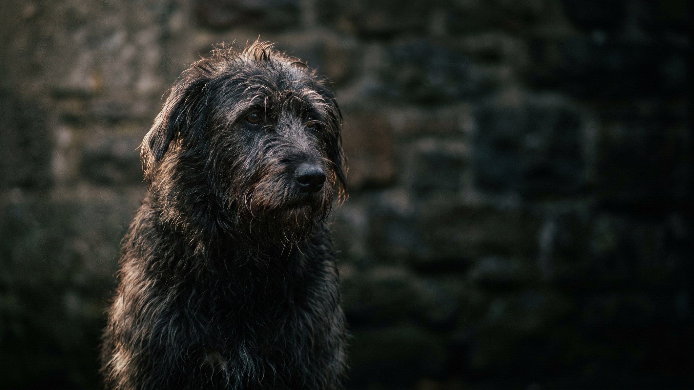

Собака пришла с ноябрьской прогулки, лапы в грязи, от шерсти запах улицы. Пора купать, но каждый раз получается по-разному: то в ухо попала вода, то шерсть сохнет полчаса в холодном коридоре. Инструкция ниже закрывает всё за один раз: подготовка, порядок мытья, чем мыть и как сушить зимой.
🐾 Заведите дневник ухода за собакой
Вес, шерсть, обработки, прививки — всё в одном месте. А если что-то смущает, AI-ветеринар ответит круглосуточно и бесплатно.
Завести дневник → Завести в MAX →
У вас iPhone? AnimaLife есть в App Store
Начинайте с лап и тела, голову мойте последней. Собаки хуже всего переносят воду на морде, и если начать с головы, она сразу занервничает. Намочите шерсть до кожи, нанесите шампунь, вспеньте, промойте насквозь. Остатки шампуня на коже вызывают зуд и перхоть, так что промывайте тщательно, пока вода не станет прозрачной.
Морду протирайте влажной салфеткой или ковшом с водой без шампуня. Глаза и нос не поливайте из душа прямо в упор. После купания вытащите ватные тампоны из ушей, протрите ушные раковины снаружи сухой салфеткой.
Только шампунь для собак. Человеческий отличается по pH: кожа собаки более щелочная, и кислотный состав человеческого шампуня нарушает защитный барьер, пересушивает и провоцирует раздражение. Выбирайте шампунь под тип шерсти: короткая, длинная, жёсткая, белая.
Как часто купать: зависит от шерсти и образа жизни собаки.
После купания промокните шерсть полотенцем досуха, насколько получится. Фен держите на расстоянии 20-25 см, температура тёплая, не горячая. Сушите зимой до полного высыхания подшёрстка, а не только верхнего слоя: влажная собака на сквозняке или холодном полу рискует переохладиться. После сушки минут 20-30 не выпускайте на улицу.
Купание должно оставить шерсть чистой, без запаха и без реакции кожи. Поводы показать собаку ветеринару:
Это сигналы, что проблема не в технике купания. Врач поможет разобраться в причине.
Материал носит информационный характер и не заменяет очную консультацию ветеринара.
🐾 Чтобы уход не держать в голове
AnimaLife напомнит, когда стричь когти, вычёсывать, купать и обрабатывать от паразитов, и заведёт дневник по вашему питомцу. Бесплатно.
Настроить напоминания → Настроить в MAX →
У вас iPhone? AnimaLife есть в App Store
🐾 Понравился разбор?
Подпишитесь на канал — каждый день разбираем по одному тревожному симптому у кошек и собак: что в пределах нормы, а когда пора к врачу. Подпишитесь, чтобы не пропустить разбор, который может спасти здоровье вашего питомца.